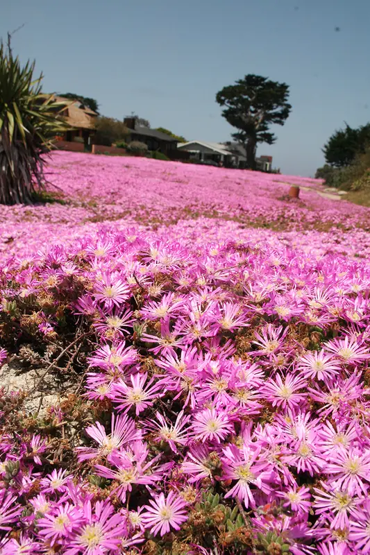
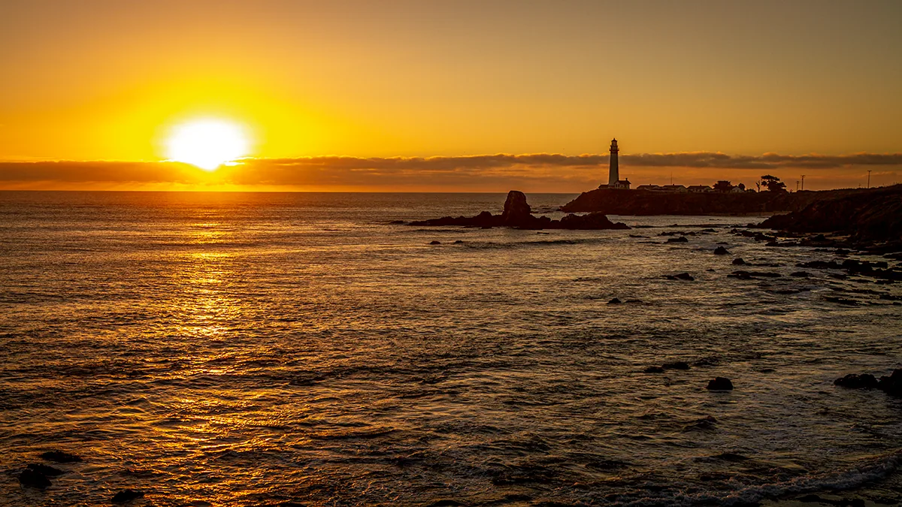

View Edition
California Coast

Pigeon Point, San Mateo County, October. The lighthouse was built in 1872 — one of the tallest lighthouses on the Pacific coast of the United States. It has been non-operational since 2001, when the lantern room was structurally compromised. The light you see in this image is the sun going into the Pacific, not the lighthouse doing its job.
The image was made from the rocks to the south of the headland. The light in the west was gold for perhaps six minutes at this intensity — the sun at the horizon, the water catching and distributing it, the lighthouse and the buildings behind it resolving into silhouette. The exposure was metered for the sky.